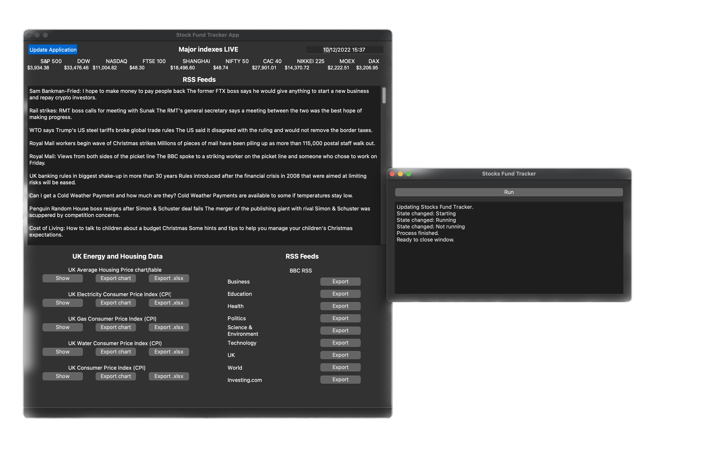

Hey,
I'm a Python and Web Developer
from South Yorkshire, UK
Learning from University, Udemy, Shaw Academy, Books, forums and endless programming manuals. I have been improving the craft of Python programming and web development with Django.


Welcome.
I created this portfolio to give myself the opportunity of showcasing my development passion. From leaving my studies at Sheffield Hallam University, Sheffield, UK, I have been engrossed in the concept of Web and Python development. Following this I began to enrol myself on online courses - spanning from Udemy to ShawAcademy. I'm also an avid learner through books, forums and online tutorials.
I am consistently aiming to improve myself, with the dream of becoming Senior developer and becoming a well respected freelance developer within the community.
Projects.
my Journal.
A fully functional newspaper/journaling application.
- Sign up and create your own account
- Make journal entries
- Easily find related entries using search to find titles, dates or authors
- Add and filter user made entries using tags for specific topics.
- Edit and delete entries
- Manage your own entries on the 'My entries' page
- Allows admin superuser accounts for moderation and housekeeping
- Comment on others' entries to grow the conversation
Developed using HTML, CSS,
Bootstrap framwork, Python and Django.
Stock fund tracker.
Track major world stock indices and update prices on demand. View and export charts for UK economic markets inc consumer price index (CPI), electricity, gas, and water - export raw data to .xlsx format. Direct access to all BBC news RSS feeds - business, technology, politics, education, science and more. Developed using Python and PyQt5.
A python PyQt GUI to:
- Track UK stock/fund investments/housing/energy costs/inflation
- Compare personal investments with global indexes/stocks
- Collect news and major economic news outlets
- Click the 'Update Application' button (blue colour) then 'run' within the new window
to
update
the
economic data provided.
- Displays the current prices for the top 9 major stock indices
- News headlines from the BBC (education, technology, uk, world, health, politics,
science,
business)
- News from Investing.com
- Functionality to export the RSS feeds to the users chosen file location
- Show and/or export line graphs of UK economic data (Housing prices average,
Electricity
prices, Gas prices, Water prices, Consumer price index)
- Export the raw Excel (.xlsx) data for UK economics.
- Live date and time
Experience as a pro web developer.

Martins Money Supermarket
As a Frontend Web Developer using HTML5, CSS3, PHP, Javascript with cross-platform testing using Ruby on Rails. I designed, developed and maintained Cheap Energy Club.
Allfiled
I worked with an innovative web development team called Allfiled as a Web Developer, using agile working practices with continuous integration and delivery for production automation. Working closely with senior Ruby and Javascript developers I learnt industry standard coding techniques.
Education.
After studying for 4 years and graduating at Sheffield Hallam University, I learnt how to develop front end websites in HTML(5), CSS(3), Javascript, PHP and MySql. After taking a placement to work as a professional web developer at Allfiled.